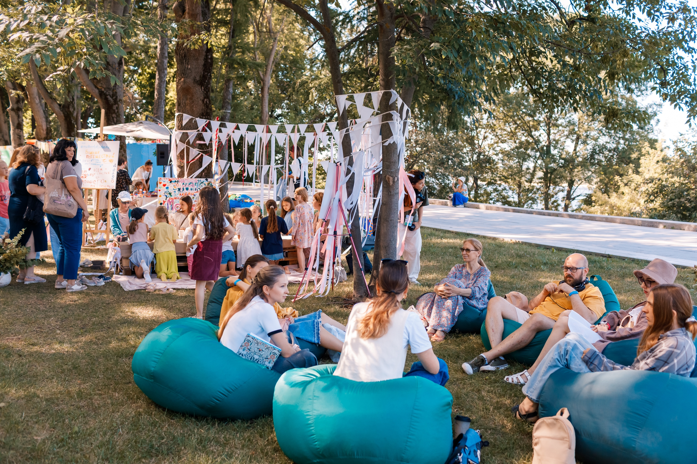

О ПРОЕКТЕ
«ЭкоДобро» — это уникальная информационная платформа, созданная для тех, кто хочет жить в гармонии с природой и готов совершать конкретные добрые дела ради неё. Мы объединяем неравнодушных людей, волонтерские организации, экологические фонды, социально ответственный бизнес и всех, кому небезразлично будущее нашей планеты.
Наш проект родился из простой, но важной идеи: помочь каждому человеку найти свой путь к осознанной и экологичной жизни. Мы верим, что даже маленькие шаги, сделанные многими людьми, способны привести к большим переменам.
Что мы делаем?
Мы создали единое цифровое пространство, где собрана самая полная и актуальная информация обо всех способах внести свой вклад в процветание природы. На нашем сайте вы найдете ответы на главные вопросы: куда пойти, чем помочь, с чего начать.
Волонтерство

Хотите помогать не разово, а системно? В этом разделе мы собрали лучшие волонтерские программы и образовательные проекты. Здесь вы сможете:
- Обучиться: пройти лекции, вебинары и мастер-классы от экспертов в области экологии, чтобы лучше понимать проблемы окружающей среды и пути их решения.
- Найти программу: подобрать для себя волонтерскую инициативу — от помощи в заповедниках до участия в городских субботниках и просветительских акциях.
Мероприятия

Живое общение и совместные действия вдохновляют лучше всего! Мы регулярно обновляем афишу экособытий Нижнего Новгорода и других регионов. У нас вы найдете:
- Акции: масштабные сборы вторсырья (как «БумБатл»), плоггинги (забеги со сбором мусора), чистые игры и другие полезные активности.
- Фестивали: яркие праздники экологии, такие как фестиваль BOTANICA, с лекциями, маркетами, музыкой и творческими мастерскими для всей семьи.
- Лекции: встречи с учеными, экоактивистами и популяризаторами осознанного образа жизни.
Пункты приема

Куда сдать старую одежду? Где принимают макулатуру? Можно ли сдать книги на переработку или в буккроссинг? Мы создали раздел, где каждый сможет найти ближайший пункт для:
- Вторсырья: макулатура, пластик, стекло, металл, опасные отходы (батарейки, лампы).
- Одежды: пункты приема вещей для нуждающихся, а также контейнеры для переработки текстиля.
- Книг: библиотеки, буккроссинг-полки и проекты по сбору книг.
Личный вклад

Большие перемены начинаются с простых ежедневных действий! В этом разделе мы собрали полезные привычки, которые помогут вам сделать свой быт экологичнее. Вы узнаете, как:
- Экономить ресурсы: простые правила бережного расхода воды и электроэнергии, которые помогают планете.
- Правильно обращаться с отходами: как организовать дома удобную систему сортировки вторсырья и почему важно сдавать опасные отходы в специальные пункты.
Вместе мы сможем сделать нашу планету чище, а будущее — светлее.
Давайте творить ЭкоДобро вместе!